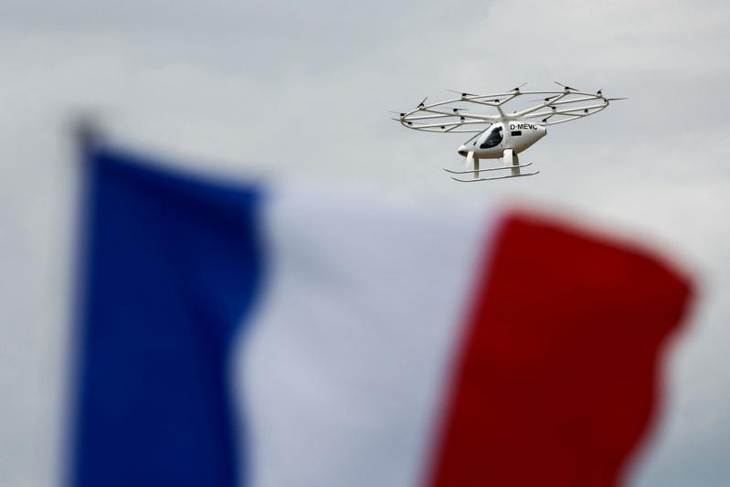

德国空中出租车制造商Volocopter与巴黎机场集团（Groupe ADP）宣布，将于巴黎奥运闭幕日（10日）在奥运马术比赛的凡尔赛宫大特里亚农宫（Grand Trianon）举行不载客试飞。
凡尔赛地方当局已批准周日的试飞。此计划由欧盟航空安全总署（The European Union Aviation Safety Agency ）与法国民航局（The Directorate General for Civil Aviation ,DGAC）决定。
德商Volocopter生产电动垂直起降飞机（eVTOL, electric vertical take-off and landing）。此次获准试飞的机型名为Volocity，该机的机顶置有多个环状旋翼，除了飞行员外，还可容纳一人。Volocopter希望利用巴黎奥运会展示空中出租车在人口稠密的城市中，作为道路交通替代方案的可能性，同时期望打开航空无碳航行的新页。
Volocopter与巴黎机场集团（Groupe ADP）在去年提出的原计划，是在巴黎设立五个垂直起降机场的着陆点，其中一个位于塞纳河的浮桥上，以在巴黎的三条连接路线和两条观光路在线提供全球首次载客的空中出租车服务。
然而，在法国政府批准其在塞纳河上建造浮动起降平台的申请后，巴黎市政府随即基于环境与能源考量而将申请驳回，并要求拆除塞纳河上的起降平台，且终止空中出租车营运计划。在巴黎奥运开始时，该计划仍未获得法国民航局与欧盟航空安全总署的批准。
直至本周二（6日）巴黎市政府才在巴黎奥斯特利兹火车站（The Austerlitz station）附近的直升机机场为该公司开了载客试飞的起降绿灯。然而，巴黎机场集团今天（8日）表示，由于未能及时取得美国供应商的车料发动机认证，原定今天（8日）对载客而设置的试飞计划取消。
除巴黎外，Volocopter还计划在罗马和大阪等城市运作。在德国Volocopter正在与全德汽车俱乐部（Allgemeiner Deutscher Automobil-Club e. V.，ADAC）合作调查其飞机用于空中救援的用途。
巴黎奥运热话题
- 遭瑞典逆转 张本智和崩溃爆哭「宁愿死一死」
- 发育期动作不稳 全红婵：我不是天才少女、一遍一遍练
- 最后100公尺狂追3人 霍尔史诗级400公尺决赛逆转夺金
- 质疑选手性别遭洗版 JK罗琳再发文：拿马铃薯证明石头也能吃
- 林郁婷晋级冠军赛 对手再比「X」手势抗议